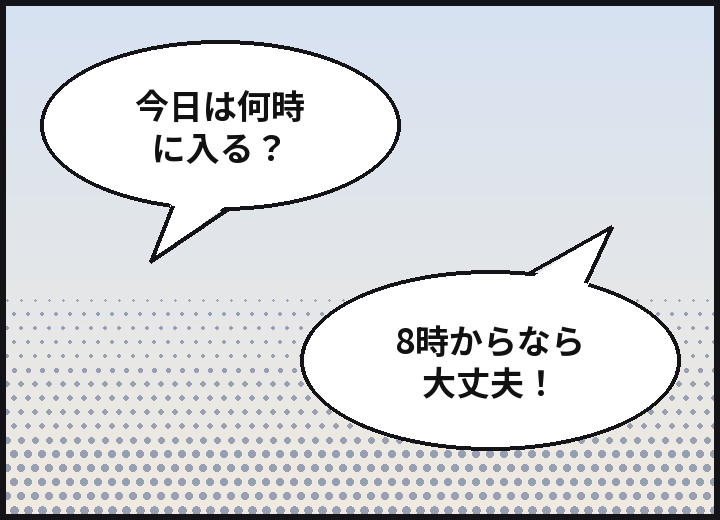
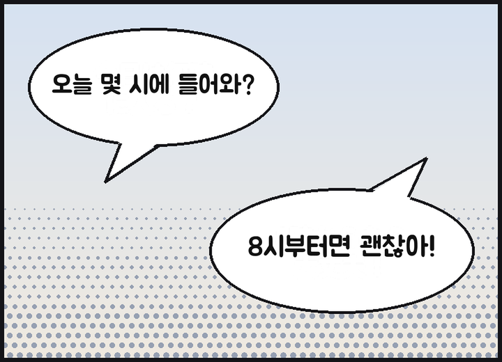

Chat på Discord – hver på sit eget sprog
DrazonChat er en Discord-bot, der oversætter chatten til den andens sprog. Når du har slået den til, bliver dine beskeder sendt oversat under dit eget navn og profilbillede, og tekst i billeder bliver også oversat.
Sådan starter duSe abonnementer
Oversættelserne laves af AI (Claude fra Anthropic). De kan være forkerte, så tjek originalen, når det er vigtigt.
Det kan botten
Antal oversættelser
Automatisk oversættelse
Én kørsel af
/oversæt tiler nok, så bliver dine beskeder på den server sendt på den andens sprog under dit eget navn og profilbillede. Originalen bliver stående med småt under oversættelsen, og knappen viser hele originalen.Oversættelser1 pr. besked
Tekst i billeder
Menukort, spilskærme, memes: Har et billede tekst, bliver den læst og oversat. Åbn det fra ikonet under billeder fra dem, der har slået oversættelse til, eller via højreklik. Kun den, der spurgte, ser resultatet, og billeder uden tekst tælles ikke med.
OversættelserNormalt 4 pr. billede
Oversættelse på billedet
Med ikonet får du en kopi af billedet, hvor den oprindelige tekst er fjernet og oversættelsen tegnet i stedet. Vælg en skrifttype (standard, tegneserie, håndskrift eller fed overskrift), og skift uden at det tæller med. Det virker bedst på vandret tekst som skærmbilleder, memes og spilskærme, og kun den, der trykkede, ser resultatet.
OversættelserNormalt 6 pr. billede


Eksempel: det oprindelige billede (japanske talebobler) og det samme billede med teksten fjernet og den koreanske oversættelse tegnet med skrifttypen Tegneserie. Talebeskeder Kommer snart
Transskribering og oversættelse af talebeskeder sendt fra mobilappen er under forberedelse. Vi fortæller i nyhederne, hvilken dag det åbner.
Oversættelser1 pr. sekund plus oversættelsenEn besked på 10 sekunder giver normalt 11
Fire toner
Slang, afslappet, venlig eller formel – du vælger for hver server. Afslappet med venner, formel på nye steder. På Free-abonnementet får du alle fire de første 14 dage og derefter den venlige tone.
OversættelserBetalte: alle fire. Free: de første 14 dage
31 sprog
Botten oversætter 31 sprog. Bottens tekster og kommandonavne findes på 30 af Discords sprog, så den anden person kan sætte den op på sit eget sprog.
Oversættelser31 til oversættelse, 30 visningssprog
Sådan kommer du i gang
En serveradministrator tilføjer botten til serveren. Bed om invitationslinket på supportserveren.
På serveren kører alle, der vil oversættes,
/oversæt til. Botten gætter dit og den andens sprog og åbner indstillingspanelet. Ret dem i rullemenuerne, hvis de ikke passer.Skriv, som du plejer, så vises oversættelsen under dit navn. Start på Free-abonnementet, og skift abonnement på abonnementssiden, når du har brug for mere.
Privatliv
Beskeder, der skal oversættes, og billeder sendes kun til Anthropic (USA). Botten gemmer originalen til en sendt oversættelse i 14 dage og cachelagrede oversættelser i 30 dage, og den gemmer ikke billeder eller den tekst, der er læst fra dem. Chatindhold havner aldrig i logfiler, og /oversæt slet-mine-data sletter dine data når som helst.